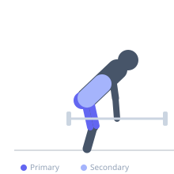
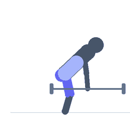

Exercise guide / Jefferson Deadlift
Jefferson Deadlift
A unique deadlift variation where the lifter straddles the barbell with one foot in front of and one foot behind the bar, then lifts with both hands gripping the bar between the legs. This asymmetrical loading pattern places uneven forces on the spine and hips, training rotational stability and offering an alternative for lifters who struggle with conventional or sumo deadlifts.
Primary muscles
gluteus maximus
rectus femoris
biceps femoris long head
Secondary muscles
erector spinae
adductor magnus
vastus medialis
Stabilizers
transverse abdominis
internal oblique
external oblique
Equipment
Standard Barbell
Optional
Trap Bar (Hex Bar)


Starting position
- Stand straddling the barbell with one foot in front of the bar and one foot behind. Reach down and grip the bar with one hand on each side of the front foot.
Setup
- Load a barbell on the floor. Stand directly over it, straddling it. Grip the bar with both hands in a staggered position.
Steps
- Step 1: Brace the core and grip the bar with one hand in front of the leading thigh and one behind.
- Step 2: Drive through both feet to stand, lifting the bar between the legs.
- Step 3: Lock out at the top with hips and knees fully extended.
- Step 4: Lower the bar back to the floor under control.
Coaching cues
- Drive through both feet equally
- Alternate the lead foot each set
Breathing
- Inhale and brace before the pull. Exhale at the top.
Range of motion
- Full extension at the top. Bar returned to the floor between reps.
Tempo
- 2-0-2-0
Common mistakes
- Rotating the torso excessively — the spine rotates slightly but should not collapse
- Using too much weight before learning the movement
Safety
- This movement is naturally asymmetrical — alternate which foot leads each set for even development
Training
- strength: 3–8 reps
- hypertrophy: 8–15 reps
- strength: 3–5 sets
- hypertrophy: 3–4 sets
- Rest: {'strength': 180, 'hypertrophy': 90}